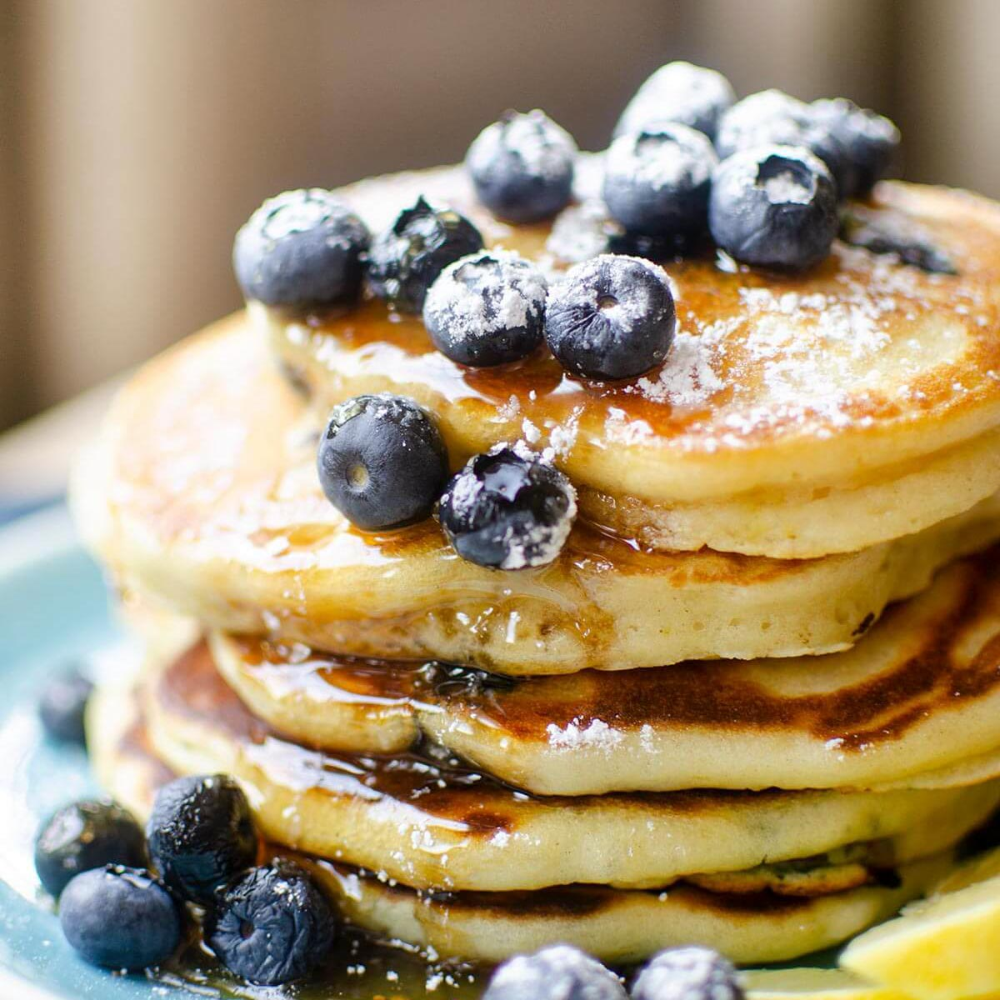

Lemon-blueberry pancakes

Description
Lemon Blueberry Pancakes are a match made in heaven. Zesty lemon, plump juicy blueberries and fluffy pancakes. All smothered in butter and maple syrup or your favorite toppings.
This blueberry pancakes recipe makes fluffy pancakes with crispy edges and loaded – yes loaded – with oozing blueberries and citrus flavors. Delish!
Ingredients
- 1 1/4 cups all-purpose flour
- 1 tablespoon baking powder
- 1 teaspoon white sugar
- 1/2 teaspoon salt
- 1 cup milk
- 1 egg
- 1/2 tablespoon butter, melted and slightly cooled
- 1 lemon, zested
- 2 teaspoons oil, or as needed
- 1 cup blueberries
Steps
- Sift together flour, baking powder, sugar, and salt in a large bowl.
- Whisk milk and egg together in a small bowl; whisk into flour mixture until blended. Stir in melted butter and lemon zest.
- Heat a lightly oiled griddle over medium-high heat. Drop batter by 1/4 cupfuls onto the griddle; drop a few blueberries on top, then cover each with a little more batter. Cook until bubbles form and the edges are dry, 3 to 4 minutes. Flip and cook until browned on the other side, 2 to 3 minutes. Repeat with remaining batter.